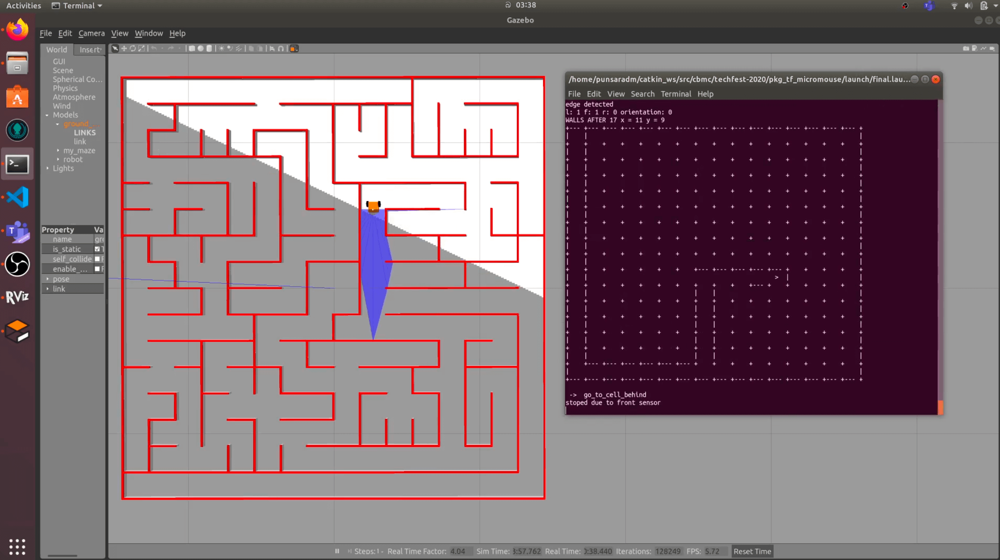

Hi everyone, it's the end of the year 2020 and our team "CircuitBreakers" has been able to secure the Second Runner Up award in the International Micromouse Challenge organised along with Techfest 2020 (link); Asia's largest Science and Technology Festival in its 24th edition. The competition successfully concluded on 26th of December, 2020 with more than 300 registrations. This is the first time after 11 years our mother nation was able to secure an award after Mr. Salinda and his team won the championship (link) in 2009. I thought of writing an article after many requests from our friends and mentors. Therefore, this article is written in the goodwill of sharing our journey and experience so far and also to raise awareness of the importance of this milestone in the Sri Lankan Robotics arena.
What is an IMC (International Micromouse Challenge)? 💭
For those who don't know yet of micromouse competitions I will briefly tell you a bit about that. In our childhood we all have come across the small challenge of the "rat and the carrot" challenge where we have to guide the rat to the carrot by tracing the path with a pencil. In the same analogy, here the goal is to design, program and develop a robot mouse who can start at a corner of the wall maze and go to the center while solving the maze in the least amount of time. The mouse can explore the maze in the given time and can have several runs to the center and return back. The minimum run time from start to the center is used to determine the winner. As the common practise there are two runs called the “search run” and the “fast run” where in the search run the micromouse tries to find its way to its center using the common "flood fill" algorithm (link) while saving the maze wall configuration in its memory. After the shortest path is found, the mouse executes the fast run from the available wall data of the maze.
Micromouse Competitions can be considered as another kind of sport where there's no age gap to participate as well as there's no limit of knowledge to learn. The IEEE Micromouse standard (link) maze consist of 16x16 cells and the current world record is 3.921 seconds which is held by Ng Beng Kia. There are several International Micromouse Challenges/ Competitions (IMC) spread across the world. Some popular competitions among these are All Japan Micromouse Competition (link), Taiwan Micromouse Intelligent Robot Contest (link), APEC MicroMouse Contest (link) and Techfest IMC (link). Furthermore there are many nation wide competitions in the USA, UK, Singapore and many more countries. More information can be found by visiting these two popular websites. (Micromouse Online and Micromouse USA)

Why build a micromouse? 🛠
This is a broad topic that suits a separate article but, I will explain for the enthusiastic readers who read up to hear for your knowledge. Micromouse competitions fall under robotics competitions therefore indeed a person needs to have thorough knowledge in electronics, programming and mechanics to build one. But the robot is small enough even for a kid to start building compared to a complex robot arm. The hardware can go from using a cheap ultrasonic sensor to high resolution IR sensor and from using a cheap DC motor to a high resolution premium encoder Faulhaber motor (link). Applying the same in the software aspect, one can program using the simple Arduino platform or using the complex industrial platforms. The Fastrun algorithms can be simulated using programming platforms and can be researched up to a PhD study. Therefore building a micromouse can benefit whether you are a kid stepping into robotics or whether you are an expert in the field of robotics. Here is a photo of previous micromouse robot we have build called "Wega Batta v2.0"

Covid Pandemic and Virtual Competition Space 😷
Because of Covid pandemic, a major impact happened to the International robotics competition space. As a result of that many online robotics platforms have emerged to fill the gap of learning robotics effectively. I will write a separate article soon on learning robotics effectively in the midst of covid. But still, no proper solution is there to hold the competitions online as it's nearly impossible to do robotics without physical hardware. But for robots that don't require much hardware complexity can be simulated through softwares like Robot Operating System (ROS) and Webots platforms which are both open-source. The first competition held in Sri Lanka virtually is the IESL Robogames 2020 competition organised by the IESL IT & Communication Engineering Sectional Committee in collaboration with University of Moratuwa Computer Science Engineering department. I'm really happy that our juniors representing "CircuitBreakers Robotics" won the championship in this competition as well. Here they have used the “Webots” platform to conduct the competition. In Techfest 2020 IMC; being one of the first competitions to conduct online, they have used ROS to conduct the competition. Let's have a look on how the competition is conducted.
How Competition was held? 🏁
The teams were given a sample maze created in the Gazebo application in ROS Melodic environment with a sample robot URDF (Unified Robotic Description Format) configured. Then the teams are allowed to program either in C++ or Python2 as they preferred. At the first round teams had to submit a video demonstrating their run in the sample maze given. Based on that teams were shortlisted to participate in the finals. Each team received a 20 mins time slot to compete where their submitted code is run in the final maze. The simulation time was used to determine the final scores with addition of negative marks for any collisions with the maze walls. The winners were announced after all the teams have competed and the judges have finalised their decision. Here you can find our demostration video we have submitted for the first round. (link)
Why is this award great for Sri Lankans? 🇱🇰
Our seniors from the Electronic and Telecommunications department have participated in the International Robotics Competition arena previously in competitions like Robocon 2019, IRC (International Robotics Challenge) by IIT Bombay, IMC 2009 by IIT Bombay and many more. But due to high competition our teams had to work hard to achieve awards and not in every time we have been able to secure one. After being champions in IMC 2009 in Techfest 2009, it's after 11 years our team has won the 2nd Runner Up award which marks a milestone in Sri Lankan Robotics history. We are hoping this achievement will encourage our young budding robotics enthusiasts to follow our footsteps to bring greater victories to our motherland.
Our approach to Micromouse and ROS 👨🏻💻
We have used python2 as the programming language to program the robot. Here we first simulated the flood-fill algorithm while at the same time tested the fundamental robot functions like turning left, right and moving a single cell while following walls. After that we integrated the core code with the traversing algorithm together to work seamlessly. Here we have used version control systems like Git to work online collaboratively. We have used our own variance of flood fill algorithm and a curve turn algorithm. The biggest challenge we have found is the high performance requirement that was needed to simulate the robot. To solve that we had to find a high performance laptop and install Ubuntu operating system separately rather than running on a virtual machine. Also we have tweaked the URDF of the robot to suit our requirements of fast turning and stability.

Our Team ❤️
Here I thought it would be great to have a little note about our team and qualifications that enabled us to achieve this award. Of course dedication, patience and enthusiasm is a must to win robot competitions. Being all team members from the Electronic and Telecommunications Engineering undergraduates at University of Moratuwa we have a fundamental knowledge in Electronics and Programming. Being the leader of the team, I had two previous experiences in building micromouse robots which was named "Wega Batta" (link) and currently I’m working as a visiting researcher (student) at University of Sydney, Faculty of Engineering. Next Dilanka had experience in building a micromouse and also he’s continuing his internship in Zone24x7 which is a well known robotics company in Sri Lanka. Shalutha also built a micromouse himself previously and currently doing his internship at CSIRO Data61 Robotics and Autonomous Systems Group, Australia. At last but not least, Punsara studies in his second year and he is very passionate about robotics and has participated in many competitions since his school time. Also he was the leader of the team which won the IESL Robogames 2020 competition which is the first virtual robotics competition in Sri Lanka.
What's next? 🤩
We as CircuitBreakers Robotics are working towards empowering the robotics education in Sri Lanka with our ever-learning knowledge and experience. We are envisioned to make available free robotics online resources for anyone to learn robotics which is not currently available for Sri Lankan students. We are also looking forward to participating in more International Robotics Competitions in the future.
Finally, we are more than happy to receive your suggestions and comments on this article for us to improve in the future. Thank you and stay tuned for more updates in the future. Happy time building robots! 🤖🛠